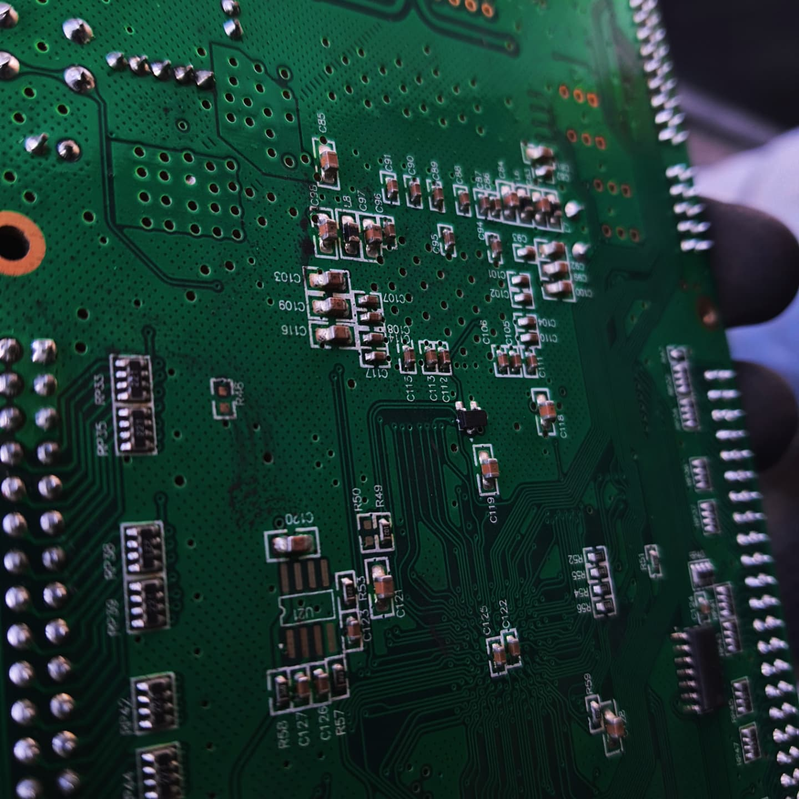
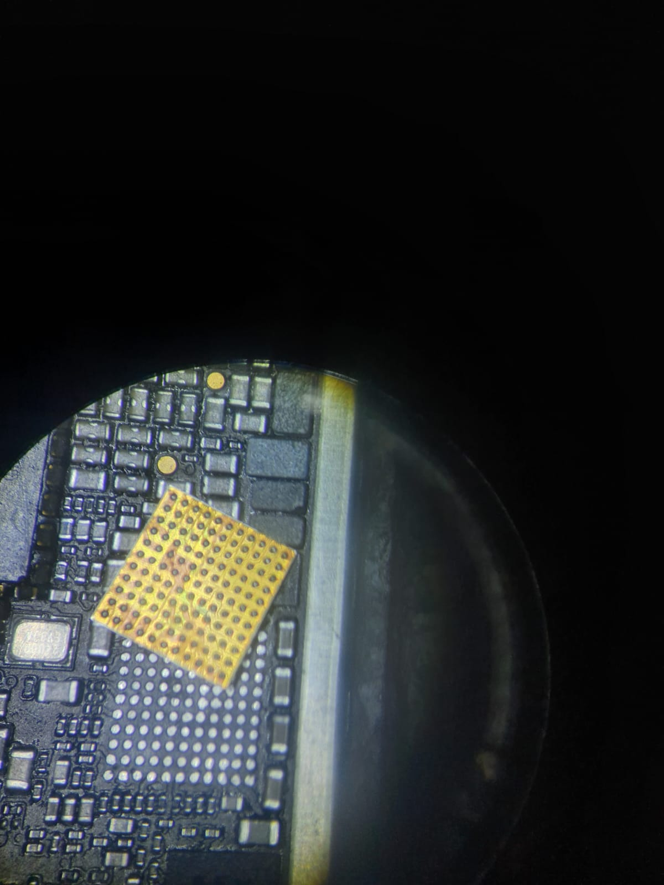

01. Confianza
Trabajamos con transparencia y responsabilidad en cada servicio.
Brindamos soluciones en CCTV, mantenimiento, redes y soporte técnico para hogares, personas y negocios en Quetzaltenango.

CGLink es un negocio de Quetzaltenango dedicado a brindar soluciones tecnológicas para personas, hogares y negocios. Nuestro objetivo es ayudarte a mantener tus equipos, sistemas y conexiones funcionando correctamente, mediante servicios claros, atención cercana y trabajos bien hechos.
Hablemos de tu proyectoTrabajamos con transparencia y responsabilidad en cada servicio.
Buscamos soluciones funcionales y trabajos bien realizados.
Escuchamos tus necesidades y buscamos la solución adecuada para cada caso.
Soluciones para tu tecnología
Mantenimiento · CCTV · Redes · Reparación
Servicios técnicos para mantener tus equipos, sistemas y conexiones funcionando correctamente.

Mantenemos tus equipos en buenas condiciones para que funcionen de manera eficiente y confiable. Realizamos mantenimiento preventivo y correctivo, limpieza interna, revisión de componentes, cambio de pasta térmica, diagnóstico de fallas y optimización de software. Nuestro objetivo es ayudarte a prolongar la vida útil de tus equipos, prevenir problemas y recuperar su funcionamiento cuando presentan inconvenientes.

Ofrecemos servicios de revisión, mantenimiento y configuración de sistemas de videovigilancia. Trabajamos con cámaras analógicas e IP, así como con equipos DVR y NVR. También evaluamos proyectos de instalación según sus características y requerimientos.
Realizamos trabajos de instalación, organización y mantenimiento de cableado de red para hogares y pequeños negocios. Contamos con servicios de ponchado de conectores, instalación de puntos de red y revisión de conexiones. Buscamos que tu infraestructura de cableado sea ordenada, funcional y adecuada para las necesidades de conectividad de tus equipos.

Brindamos atención técnica para dispositivos móviles que presentan fallas de funcionamiento, problemas de hardware o daños en sus componentes. Realizamos diagnósticos, revisión de componentes y trabajos de reparación según el tipo de dispositivo y la naturaleza del problema. Cada equipo se evalúa para identificar la posible causa de la falla y determinar una solución adecuada.
Tu tranquilidad comienza con un proceso claro y transparente.
Conocemos tus necesidades y escuchamos qué necesitas resolver.
Revisamos tu equipo o instalación para identificar el problema.
Te presentamos una propuesta clara antes de comenzar.
Realizamos el trabajo acordado con responsabilidad.
Verificamos el funcionamiento antes de finalizar el servicio.
Cuéntanos qué necesitas. En CGLink brindamos soluciones tecnológicas en Quetzaltenango y municipios cercanos, ayudándote con tus equipos, redes y sistemas.
Contáctanos por WhatsAppQuetzaltenango y municipios cercanos, Guatemala.
+502 3896-6117
Lunes a viernes: 8:00 a. m. – 6:00 p. m.
Sábados: 9:00 a. m. – 12:00 p. m.
Domingos: Cerrado